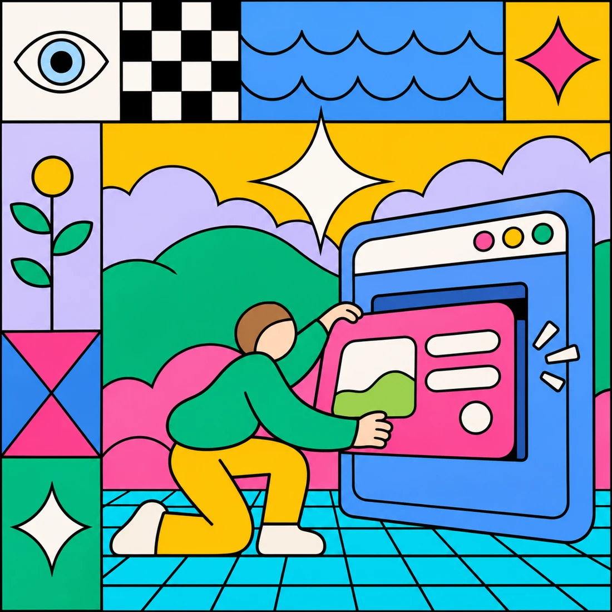
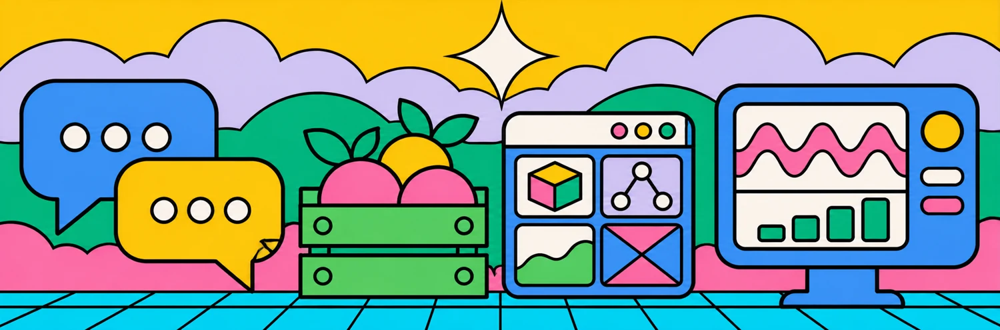

Ramin Partovi
Senior Product Designer
I’m a Senior Product Designer specializing in B2B SaaS and mobile experiences. I turn complex workflows, technical systems, and business challenges into intuitive products that work for real people. I use AI alongside my design process to explore ideas faster, uncover new possibilities, and spend more time solving the problems that matter.

View My Work
AI Workflow Automation & Media Processing
Legacy flagship application redesigned using user centric approach. 72% more task completions.
Read the case studyUnderstand your symptoms. Discover your patterns.
I designed and built this app on my own using AI, taking it from idea to market.
Visit siteReal-Time Insights for Media
How I helped transition hardware into a flexible, software-defined UX. Average 91 SUS score.
Read the case studyEnsuring compliance on fresh produce
Redesign of web and mobile applications. 12% reduction in customer churn.
Read the case studyMobile-first order & inventory management
I led the redesign of a complex B2B platform for foodservice teams. 80% less time on task.
Read the case studyMy Resume

Senior Product Designer
Oct 2023 – Nov 2026Telestream · Remote
- Joined as one of the company’s first designers; helped grow the design team to seven and created its first design system, supporting the redesign of nine applications.
- Lead designer for Vantage, Telestream’s flagship media workflow platform; redesigned workflow discovery and reuse, and explored review-first AI-assisted setup.
- Led design for four products from concept through launch across broadcast monitoring and media workflow tools, partnering with product, engineering, QA, and customers.
- Worked with customer teams at CBS Studios, MLB, Comcast, and NBC to understand broadcast and media workflow needs.
- Designed Pulse, an on-premises broadcast monitoring application; dashboards, input monitoring, timing monitoring, and alarm workflows shipped.
- Established the company’s first research and feedback loop: usability testing, a direct customer channel, and SUS/task-success metrics that quantified design impact.
UX/UI Designer
Jan 2020 – Sep 2023iTradeNetwork · Dublin, CA
- Led UX/UI design across multiple enterprise projects, creating new solutions and modernizing existing applications.
- Worked with customer teams at Sysco, Walmart, Driscoll’s, and Foodbuy, partnering with product and engineering to turn market and user insights into problem framing and actionable design recommendations.
- Contributed to an enterprise design system that created more consistent experiences across a diverse product portfolio.
- Redesigned legacy applications and achieved higher System Usability Scale (SUS) scores through research, prototyping, and usability testing.
Enterprise Customer Success Manager
Jul 2016 – Jan 2019Everfi · Walnut Creek, CA
- Managed 80–100 enterprise and strategic accounts representing $1.4 million in annual contract value; identified customer risks and worked across teams on retention and growth opportunities.
User Experience Design Program
2019–2020UC Berkeley Extension
BS, Business Marketing
2010–2012San Francisco State University
Let’s Chat!
Open to various product design roles, Bay Area or remote. The fastest way to reach me is email. I answer within a day.
rpartovi123@gmail.com